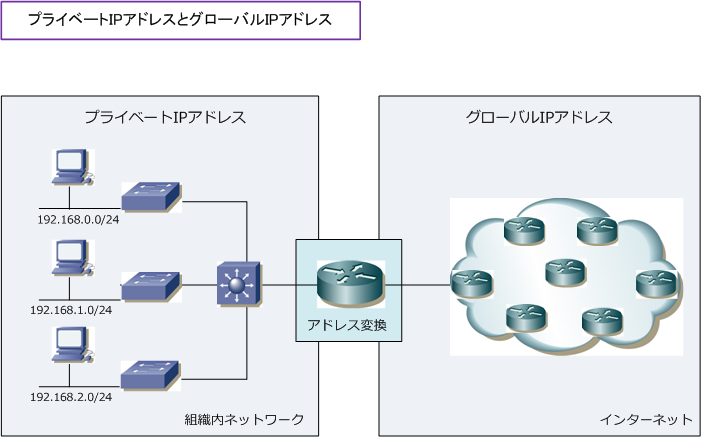

IP address - Global IP address / Private IP address
IPアドレス - グローバルIPアドレス
IPアドレスは大きく2種類あります。1つはグローバルIPアドレス、もう1つはプライベートIPアドレス。 グローバルIPアドレスとは、インターネットに接続された機器に一意に割り当てられるIPアドレスであり、 世界的にはICANN、日本ではJPNICという機関で管理しています。ICANNはIANAの後継組織となります。
| グローバルIPアドレスの範囲 | |
|---|---|
| クラス | アドレス範囲 |
| クラスA | 1.0.0.0 ～ 9.255.255.255 |
| クラスA | 11.0.0.0 ～ 126.255.255.255 |
| クラスB | 128.0.0.0 ～ 172.15.255.255 |
| クラスB | 172.32.0.0 ～ 191.255.255.255 |
| クラスC | 192.0.0.0 ～ 192.167.255.255 |
| クラスC | 192.169.0.0 ～ 223.255.255.255 |
今、この瞬間、みなさんは自分のPCをインターネット接続して「ネットワークエンジニアとして」の Webサイトを閲覧しているので、みなさんのPCには上記のグローバルIPアドレスが付与されています。 ※ NATやNAPTなどのアドレス変換技術をルータなどで使用している場合は、プライベートIPアドレスがPCに付与されます。
IPアドレス - プライベートIPアドレス
プライベートIPアドレスは、会社や家庭などの組織内（ローカル）で一意に割り当てられるIPアドレス。 このIPアドレスはJPNICなどの機関に申請する必要はなく自由に使えます。自由に使用できるとはいえ 組織内で一意でない場合は、宛先を混同して正常に通信できないので一意に割り当てる必要があります。 また、このIPアドレスが割り当てられた機器はインターネットでは通信を行えないため、インターネット 通信を行うためには、アドレス変換技術などでグローバルIPを持つ機器に中継してもらう必要があります。
| プライベートIPアドレスの範囲 | |
|---|---|
| クラス | アドレス範囲 |
| クラスA | 10.0.0.0 ～ 10.255.255.255 |
| クラスB | 172.16.0.0 ～ 172.31.255.255 |
| クラスC | 192.168.0.0 ～ 192.168.255.255 |
※ プライベートIPアドレスの情報だけを暗記して、プライベートIP以外がグローバルIPアドレスと覚える方が効率的です。
